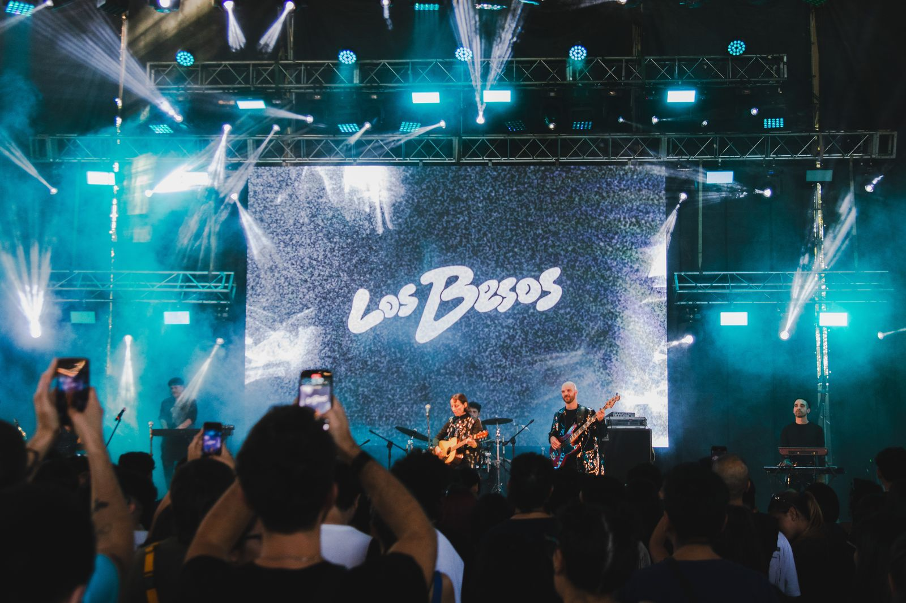
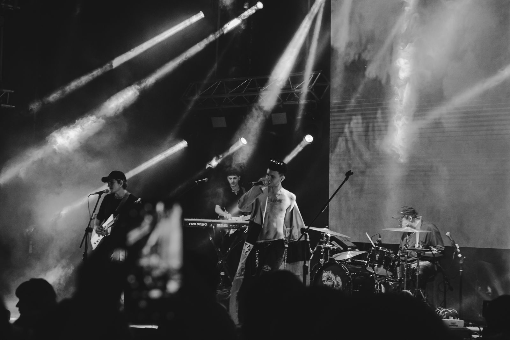

Fotografía y diseño · Tucumán, Argentina
JuanGuzman
Ayudo a marcas, negocios y personas a profesionalizar su imagen, del lente al píxel.


Fotografía
Música, deporte, gastronomía y moda. Cada imagen con un propósito claro.


Lo que hago
Un solo aliado para la imagen de tu marca: la foto, el diseño y la experiencia digital.
Fotografía
Gastronomía, producto, deportes, conciertos, eventos y moda, con dirección de arte en cada sesión.
Identidad visual
Logotipo, manual de marca y sistema gráfico para que tu marca se vea igual en todos lados.
UX/UI y web
Sitios y plataformas pensados para tu cliente, prototipados en Figma y listos para usar.
Redes y e-commerce
Carruseles, historias y campañas que acompañan tus ventas.
Filmmaking
Reels y videos cortos con la misma mirada que mi fotografía.

Sobre mí
Soy Juan Alfredo Guzman, fotógrafo y diseñador digital en San Miguel de Tucumán. Trabajo de forma remota con marcas, negocios y personas.
Mi formación en marketing digital y e-commerce me lleva a pensar cada imagen en función de un resultado. Vengo de la fotografía y el filmmaking, y esa mirada guía mi dirección de arte.
Fuera del trabajo toco el bajo y le hago el mantenimiento a mi moto.
Formación
- Lic. en Diseño DigitalUniversidad del Este, en curso
- Marketing Digital y E-commerceEAE Madrid, 2019
- Fotografía Social y FotoperiodismoUBA, 2020
- Diseño Web HTML y CSSCoderhouse, 2022
Herramientas
- Figma
- Photoshop
- Illustrator
- Lightroom
- After Effects
- CapCut
- Canva
- Notion